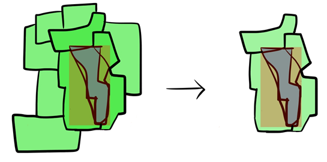

Concept Algorithm¶
This plugin has four concept there are MapCurve, Squential, Nearest Neighbour, and Wilkersat. MapCurve method is used for similarity calculation. The other method is used for searching the matching feature on layer. User determine the treshold of similarity to make sure the map is similar in some confidence interval.
MapCurve (Hargrove et al. 2006)¶
MapCurves is algorithm for checking similarity between two maps. MapCurve Algorithm is developed by Hargrove et al. (2006). Mapcurves can calculate the similarity proportion. Mapcurve can be applied in vector maps.
{kind=link}
Squential¶
Squential Method will checking the features in layer within each bounding box (bb) features.
{kind=link}
Nearest Neighbour¶
Nearest Neighbour Method will checking the features in layer within determined box. Box will contructed in a radius. Radius is determined by user.
{kind=link}
The geometry feature will translated to the center of neighbour before calculating the similarity score.
Wilkerstat¶
Wilkerstat Method depends on database system in BPS. The method is matching the primary keys. The keys are PROVNO, KABKOTNO, KECNO, DESANO (see https://sig.bps.go.id/)